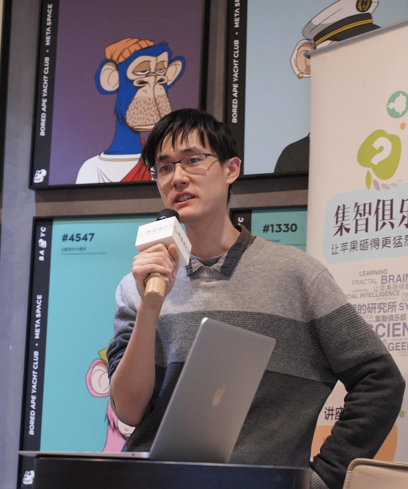

Jiayun (Jeffrey) Wu
|
 |

Biography
I am a master student in the Department of Computer Science and Technology at Tsinghua University, advised by Prof. Peng Cui. I had the opportunity to visit Carnegie Mellon University in 2023 where I was advised by Prof. Steven Wu, and Princeton University in 2024, where I was advised by Prof. Chi Jin. I obtained my Bachelor's degree from the Department of Computer Science and Technology at Tsinghua University in 2022.
My research interests are in foundations of trustworthy machine learning, with the goal of designing certified and efficient algorithms that are reliable under real-world variability. More specifically, I focus on theoretical understanding of generalization under distribution shifts, and explore interventions in data, models, and optimization to improve robustness. I am also interested in algorithmic fairness across subpopulations and unbiased estimation of uncertainty. My research spans theory and practice, with applications in vision, econometrics and healthcare.
I am applying for PhD for 2025 fall.
Publications
* Authors with equal contributions are marked with asterisks.Conference Publications
- Jiayun Wu, Jiashuo Liu, Peng Cui, and Zhiwei Steven Wu. Bridging Multicalibration with Out-of-distribution Generalization Beyond Covariate Shift. In Advances in Neural Information Processing Systems 37: Annual Conference on Neural Information Processing Systems, NeurIPS, 2024. [Link]
- Jiashuo Liu*, Jiayun Wu*, Tianyu Wang, Hao Zou, Bo Li, and Peng Cui. Geometry-Calibrated DRO: Combating Over-Pessimism with Free Energy Implications. In Proceedings of the 41st International Conference on Machine Learning, ICML, 2024. [Link]
- Jiashuo Liu, Jiayun Wu, Jie Peng, Xiaoyu Wu, Yang Zheng, Bo Li, and Peng Cui. Enhancing Distributional Stability among Sub-populations. In Proceedings of The 27th International Conference on Artificial Intelligence and Statistics, AISTATS, 2024. [Link]
- Jiashuo Liu, Jiayun Wu, Renjie Pi, Renzhe Xu, Xingxuan Zhang, Bo Li, and Peng Cui. Measure the Predictive Heterogeneity. In The 11th International Conference on Learning Representations, ICLR, 2023. [Link]
- Jiashuo Liu*, Jiayun Wu*, Bo Li, and Peng Cui. Distributionally Robust Optimization with Data Geometry. In Advances in Neural Information Processing Systems 35: Annual Conference on Neural Information Processing Systems, NeurIPS (Spotlight), 2022. [Link]
Journal Publications
- Zimu Wang, Hao Zou, Jiashuo Liu, Jiayun Wu, Pengfei Tian, Yue He, and Peng Cui. AdaptSel: Adaptive Selection of Biased and Debiased Recommendation Models for Varying Test Environments. In ACM Transactions on Knowledge Discovery from Data, TKDD, 2024. [Link]
- Bing Yuan*, Jiang Zhang*, Aobo Lyu, Jiayun Wu, Zhipeng Wang, Mingzhe Yang, Kaiwei Liu, Muyun Mou, and Peng Cui. Emergence and Causality in Complex Systems: A Survey of Causal Emergence and Related Quantitative Studies. In Entropy, 26(2): 108, 2024. [Link]
Preprints
- Shange Tang*, Jiayun Wu*, Jianqing Fan, Chi Jin. Benign Overfitting in Out-of-Distribution Generalization of Linear Models. Under review for The 13th International Conference on Learning Representations, ICLR, 2025. Presented in NeurIPS 2024 Workshop on Mathematics of Modern Machine Learning (M3L). [Link]
- Jiashuo Liu*, Jiayun Wu*, Bo Li, Peng Cui. Predictive Heterogeneity: Measures and Applications. Under review for Journal of Machine Learning Research, JMLR. Short version published in ICLR 2023. [Link]
- Weihuang Zheng*, Jiashuo Liu*, Jiaxing Li, Jiayun Wu, Peng Cui, Youyong Kong. Topology-Aware Dynamic Reweighting for Distribution Shifts on Graph. Under review for The International World Wide Web Conference, WWW, 2025. [Link]
Teaching
-
Tsinghua University
Teaching Assistant
● 00740123-90: JAVA and Object-Oriented Programming
Spring 2023 - Fall 2024 (4 terms)
Service
Conference Reviewer
- AISTATS 2025, ICLR 2025, NeurIPS 2024, AISTATS 2024, NeurIPS 2023.
Honors and Awards
- 2024: Tsinghua Comprehensive Excellence Scholarship (first-class)
- 2022: Beijing Outstanding Graduate (top 5%)
- 2020, 2021: Tsinghua-Junyuan-Tang Scholarship (first-class)
- 2019: Tsinghua-Hengda Scholarship (second-class)
- 2019: First prize of National Undergraduate Physics Competition